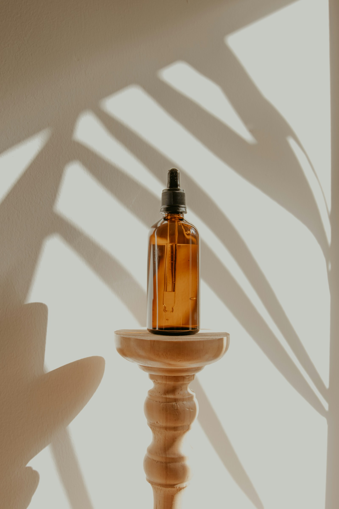
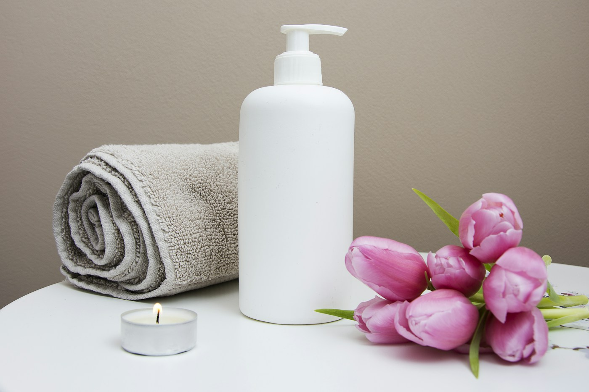

Nothing to rush.
Everything
to feel.
Small gestures. Thoughtful objects.
A little space to come back to yourself.

SLOWIS A
FEELING
AN EXPLORATION IN EVERYDAY BEAUTY
You don't need
another thing to finish.
You need a moment to begin.
Slow Form is an imagined studio for the small, sensory moments that make a day feel more like yours. Beauty here is less about transformation and more about noticing: the warmth of a cup, a texture in your hands, a little change in light.

Objects with
a softer purpose.
A conceptual palette of simple materials and everyday rituals. These objects are creative studies, not products available for purchase.
The pause vessel
A softly rounded ceramic cup. Made for something warm and a window seat.
The linen layer
A natural cloth with a lived-in texture. A small invitation to slow the setting down.
The paper companion
An unstructured notebook. A place for thoughts without a destination.
What does
your moment
look like?
Choose a little time and an atmosphere. We'll assemble a simple creative ritual you can explore here.
A playful lifestyle demonstration. No health assessment or therapeutic advice.
Your moment starts with a choice.
Build a ritual to see your three gentle steps.
Take what feels like you.
Leave the rest.